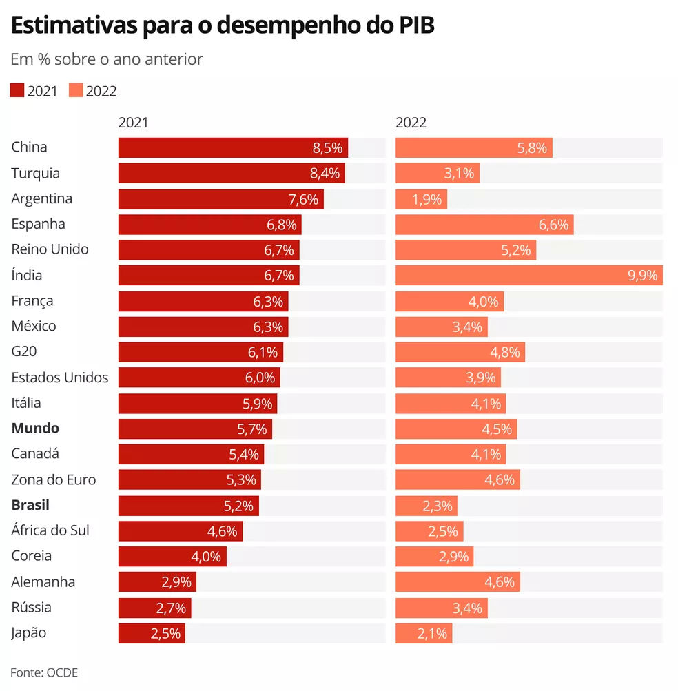

Cenário da economia ao redor do mundo:
O cenário da economia mundial não anda muito bem esses tempos, por diversos problemas que a humanidade vem sofrendo durante esses últimos anos, isso causou o terceiro ritmo mais fraco em quase três décadas, suplantado apenas pelas recessões globais de 2009 e 2020.

Quem "controla" a economia ao redor do mundo?
Quem faz isso é a FMI (Fundo Monetário Internacional) , organização criada em 1944 para reconstruir o sistema monetário global após a Segunda Guerra Mundial.


Esse tipo de notícia ajuda muito para você ter noção sobre o que está ocorrendo em volta do mundo!!!!
Arthuzin_d0_Vraul
Um cara qualquer